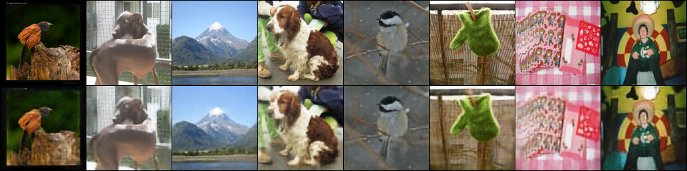
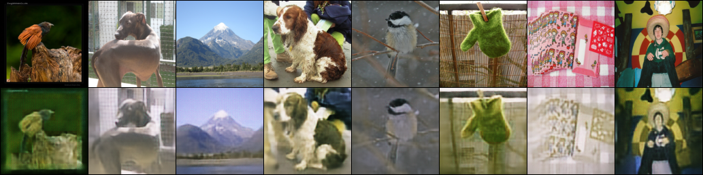
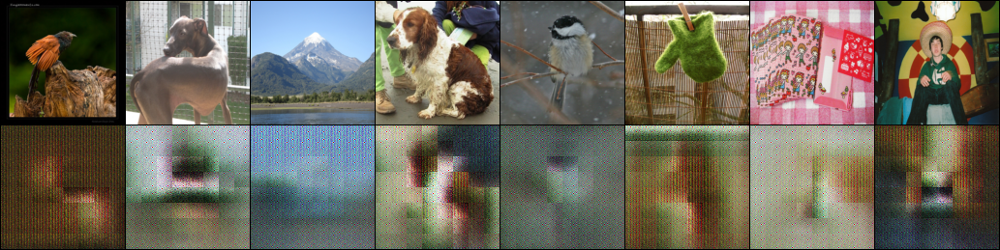
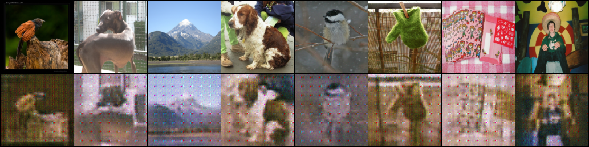

Keep the Regularizer at λ = 0.05.
Stronger Settings Only Fit Batch Noise.
The question. The autoencoder's loss has a regularizer term that pulls the latent code toward a standard Gaussian. Does that pull slow down learning by making the code shift around ("churn")? And does a squared version of the term allow a wider range of strengths? The words and symbols are defined in the glossary below.
Takeaways for new baseline runs
- Use λ = 0.05 with the plain linear loss. It had the best test MSE at 20k steps (0.0102) and at 60k steps (0.0041). Ten times stronger (λ = 0.5) stops improving after 40k steps at 0.0083 (Figure 5).
- Never set λ = 0, and do not turn the regularizer off during a run. At λ = 0 the autoencoder never starts learning: the code stays at about zero and test MSE stays near 0.12. Turned off at step 20k, the code's variance grows 5.5 times in 5k steps, churn doubles and test MSE gets 14% worse (Figure 5).
- Do not use λ above 0.5 at batch size 64. At λ = 0.5 and above, r already sits on its noise floor, so a stronger pull cannot make the code more Gaussian. It only adds churn and blur. At λ = 15.8, test MSE is 3.5 times worse (Figures 1, 3 and 7).
- Do not use the squared loss (p = 2). Its best result (0.0112) is no better than the plain loss, and at λ = 1.58 it is 2.3 times worse (Figure 1).
- If a run needs a strong λ, use the debiased loss. It removes the noise floor from each term. At λ = 15.8 it halves test MSE on 2 seeds (2.05 and 2.07 times better). It is still worse than λ = 0.05. At λ = 0.05 it gives no gain: 0.0042 against 0.0041 at 60k, with 21% more churn. Keep the plain loss for baselines (Figures 5 and 6).
- Compare r with the noise floor for your batch size, about 2 × (4 / B)². That is 0.0078 at B = 64 and 0.0020 at B = 128 (Table 2). A run at the floor gets nothing more from the regularizer. A run below the floor fits estimator noise. Changing the batch size moves the floor by the square of the change.
- Expect about 25% difference between seeds. The same settings on seed 45 gave a 27% higher test MSE (plain) and 25% higher (debiased) than on seed 44. A one-seed difference smaller than this at 20k is not reliable.
- Do not stop a run for low z_rank before about step 10k. Every run that learned started with a low z_rank, including the baseline (15 at step 5k, 198 at 20k). The collapse rule set before the experiment (z_rank below 32) flags slow starts, not failures.
Glossary
| AE | Autoencoder. An encoder turns an image into a code z, and a decoder turns z back into an image. Here, 25 million parameters (25M). |
| self-teaching | The AE trains without a direct pixel loss. Its main loss, the "view" loss, is computed through a frozen copy of the encoder (the "judge"), which is synced from the encoder at every step. |
| z | The latent code of one image: 2,304 numbers arranged as a 48 × 48 grid. The rows are tokens and the columns are channels. |
| prior | The target distribution for z: a standard Gaussian, mean 0 and standard deviation 1 for every number. |
| regularizer | The loss term that pulls z toward the prior. Its size is r. |
| r | How far a batch of codes is from the prior: the sum of the four Wasserstein terms SWD + BWD + C_SWD + T_SWD. Lower means more Gaussian. "Held-out r" is r on 1,024 fixed validation images. |
| Wasserstein term | Sort the batch's values and a same-size Gaussian sample along one direction, pair them by rank, and average the squared gaps. Each term uses a different set of directions (next 4 rows). Each term is the square of that average, D². |
| SWD | Sliced Wasserstein distance: 1,024 random directions through the full 2,304-number code. Each image is one sample, so n = B. |
| BWD | Basis Wasserstein distance: each of the 2,304 numbers of z on its own. Each image is one sample, so n = B. |
| C_SWD | Channel sliced Wasserstein distance: 32 random directions across the 48 channels. Each token of each image is one sample, so n = 48 × B. |
| T_SWD | Token sliced Wasserstein distance: 32 random directions across the 48 tokens. Each channel of each image is one sample, so n = 48 × B. |
| D | One Wasserstein term before its outer square: the weighted mean of squared rank gaps. Gaps near the center count more (weight proportional to the Gaussian density). |
| B | Batch size, the number of images per training step. 64 in every run. |
| n | The number of values sorted in one direction (see SWD to T_SWD). |
| noise floor | The r of two true Gaussian samples. It is not zero, because two finite samples never match exactly. At B = 64 it is 0.0077 (measured) and 2 × (4 / B)² = 0.0078 (predicted). The number of directions changes only its spread, not its mean. |
| λ (lambda) | Regularizer strength: the multiplier on the regularizer in the loss. λ = 0.05 is the current baseline. |
| p | Power of the regularizer loss: loss = λ × r_ref / p × (r / r_ref)p. p = 1 is plain (λ × r). p = 2 is the squared version. |
| r_ref | Reference value for the squared loss, fixed at 0.01. At r = r_ref, p = 1 and p = 2 pull equally hard. |
| plain | p = 1, loss = λ × r. |
| debiased | p = 1, but each term D² becomes max(D − 4/n, 0)². The pull stops at the noise floor. It has no tuned constant: 4/n comes from the math in Figure 4. |
| MSE, test MSE | Mean squared error between image and reconstruction, measured on 2,048 validation images (test_clean). It is never used for training. Lower is better. |
| churn | How much the code of the same image moves in 100 training steps: the root mean square of z(step) − z(step − 100), in units of the prior's standard deviation. |
| z_var | Variance of z across images, averaged over the 2,304 numbers. The prior has 1. |
| z_rank | Effective rank of z across 1,024 images: how many independent directions the codes really use. Maximum 1,023. |
| recon_div | Spread of the reconstructions across images, divided by the spread of the inputs. A low value (below 0.5) means the decoder outputs look alike. |
| step, k | One training step is one batch. k means thousand: 20k = 20,000 steps. |
| seed 44, seed 45 | Random seeds. A seed fixes the initial weights, the image order and the random draws. All runs use seed 44 unless marked. |
| continuation | A run that starts from another run's saved weights and optimizer state at a given step. |
1 Every run in one chart
2 Every run at every eval
Each row is one run and each cell is one eval, every 1,000 steps. The first chart shows test MSE, and the second chart shows churn for the same runs in the same order.
Test MSE
Churn
3 Why a stronger regularizer does not help
Where the floor comes from
The math in one line: for two samples of n values, the expected squared gap at rank fraction u is about 2u(1 − u) / (n φ(q)²). Here q is the Gaussian value at that rank and φ is the Gaussian density. Weighting by φ and averaging gives D ≈ 4/n. SWD and BWD each contribute (4/B)², and C_SWD and T_SWD contribute almost nothing because their n is 48 times larger.
| batch size B | floor of r | 4/B |
|---|---|---|
| 32 | 0.03125 | 0.1250 |
| 64 | 0.00781 | 0.0625 |
| 128 | 0.00195 | 0.0312 |
| 256 | 0.00049 | 0.0156 |
4 Longer training: λ = 0.05 against λ = 0.5
| λ 0.05, 60k | test MSE | churn | held-out r | z_var | z_rank |
|---|---|---|---|---|---|
| plain | 0.00416 | 0.098 | 0.0089 | 1.01 | 414 |
| debiased | 0.00423 | 0.119 | 0.0158 | 1.27 | 455 |
Near the floor, debiasing removes most of the SWD and BWD pull. So r doubles and z_var drifts up to 1.27, with no gain in test MSE.
5 The debiased loss
6 What the images look like
test MSE 0.0041

test MSE 0.0083

test MSE 0.0355

test MSE 0.0173

7 All from-scratch runs
| run | test MSE | held-out r | churn | z_rank | recon_div |
|---|---|---|---|---|---|
| plain λ 0 | 0.1185 | 0.8974 | 0.000 | 28 | 0.00 |
| plain λ 0.005 | 0.0342 | 0.0853 | 0.209 | 38 | 0.82 |
| plain λ 0.0158 | 0.0361 | 0.0283 | 0.186 | 78 | 0.85 |
| plain λ 0.05 (baseline) | 0.0102 | 0.0117 | 0.135 | 198 | 0.89 |
| plain λ 0.158 | 0.0128 | 0.0091 | 0.125 | 245 | 0.82 |
| plain λ 0.5 | 0.0114 | 0.0078 | 0.111 | 336 | 0.84 |
| plain λ 1.58 | 0.0130 | 0.0075 | 0.120 | 383 | 0.83 |
| plain λ 5 | 0.0242 | 0.0076 | 0.284 | 262 | 0.76 |
| plain λ 15.8 | 0.0355 | 0.0078 | 0.315 | 225 | 0.74 |
| p = 2 λ 0.005 | 0.0265 | 0.0252 | 0.178 | 100 | 0.87 |
| p = 2 λ 0.0158 | 0.0219 | 0.0151 | 0.193 | 119 | 0.86 |
| p = 2 λ 0.05 | 0.0137 | 0.0106 | 0.127 | 198 | 0.84 |
| p = 2 λ 0.158 | 0.0150 | 0.0084 | 0.133 | 264 | 0.88 |
| p = 2 λ 0.5 | 0.0112 | 0.0076 | 0.111 | 350 | 0.86 |
| p = 2 λ 1.58 | 0.0297 | 0.0079 | 0.224 | 296 | 0.88 |
| debiased λ 1.58 | 0.0123 | 0.0089 | 0.151 | 403 | 0.82 |
| debiased λ 15.8 | 0.0173 | 0.0081 | 0.229 | 416 | 0.80 |
| plain λ 15.8, seed 45 | 0.0450 | 0.0077 | 0.316 | 237 | 0.58 |
| debiased λ 15.8, seed 45 | 0.0217 | 0.0086 | 0.268 | 305 | 0.79 |
Continuations from step 20k, seed 44: λ 0.05 to 60k (test MSE 0.0047 at 40k, 0.0041 at 60k), λ 0.05 debiased to 60k (0.0048 at 40k, 0.0042 at 60k), λ 0.5 to 60k (0.0083 at 40k and 60k), and λ 0.5 with the regularizer off to 25k (0.0104).
8 Limits and open questions
- Most results use one seed. Only λ = 15.8 ran on two seeds. Seed 45 is about 25% worse than seed 44 at the same settings.
- The 60k comparison covers λ = 0.05 (plain and debiased) and λ = 0.5. λ = 0.158 was not run to 60k.
- Debiasing removes only half the cost of strong λ. It is not known whether the rest is paid early, while z is far from Gaussian, or late.
- A record error: in the first 15 runs, the train-viz series
rx_g_rholds held-out r at most steps but a gradient norm at every 2,000th step. This page computes r from its four terms. Later runs store the gradient norm asgn_r.
Proposed next runs (none queued)
| Run | Question | Proven wrong if | Cost |
|---|---|---|---|
| A. λ 0.5 debiased, continued from the λ 0.5 run at step 20k to 60k | Does fitting below the floor cause the λ 0.5 stall at 0.0083? | Test MSE at 60k is 0.0080 or more. | 3.3 GPU hours |
| B. λ 15.8 debiased, continued from the baseline at step 5k to 20k | Is the remaining cost of strong λ paid early or late in training? | Test MSE at 20k is 0.016 or more (no better than debiased from step 0). | 1.3 GPU hours |
Data: imagenet-selfteach/regx/ (definitions in README.md). Fixed setup in every run: learning rate 1e-4, batch size 64, view loss weight 0.3. Floor measured with 200 pairs of independent Gaussian batches using the training estimators.